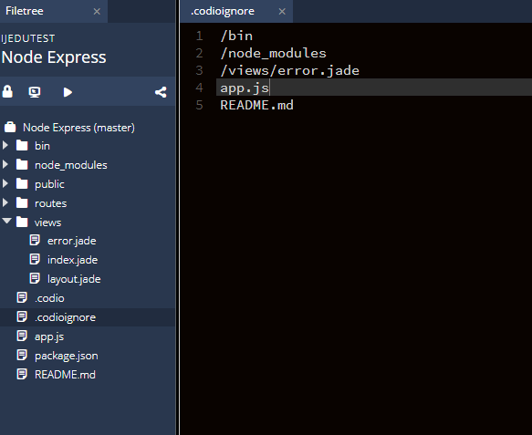
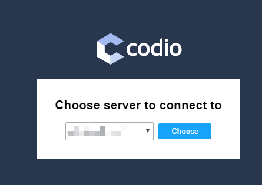
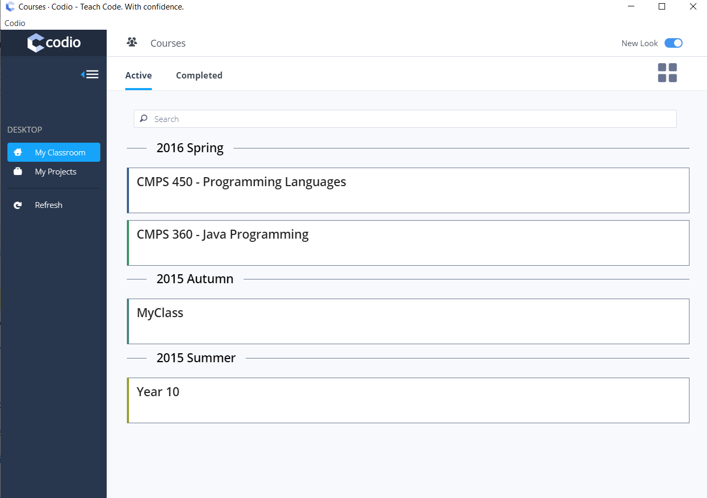
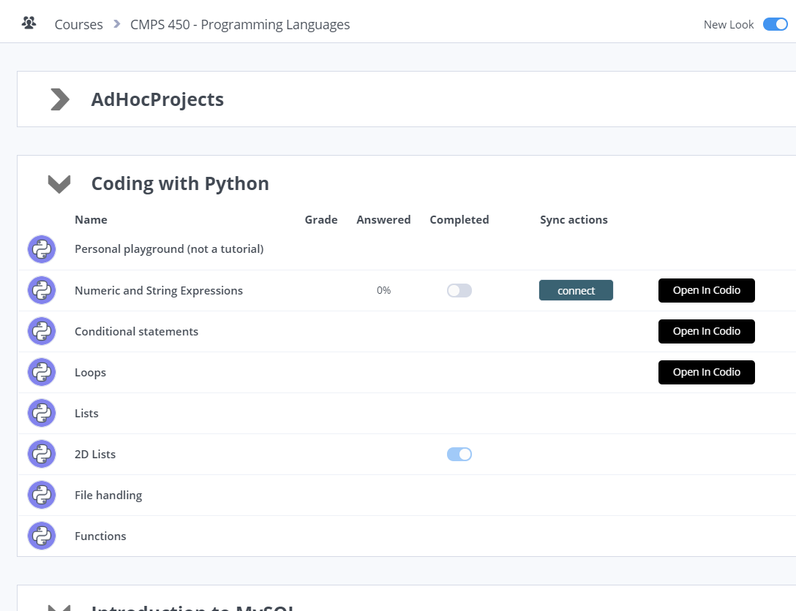
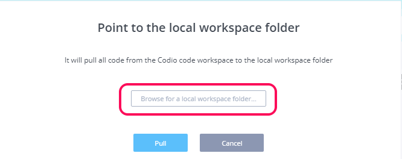
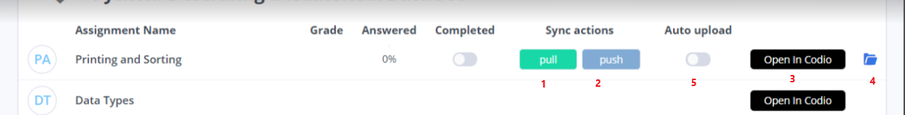
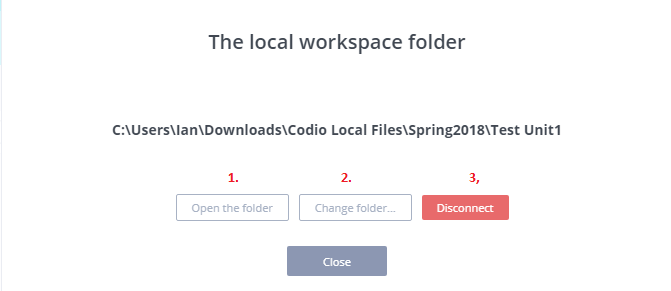

Desktop App¶
Click here to go to the download page and install to your local machine
The desktop app is to allow a local code workspace to synchronize with a Codio box.
Assignments/Projects from the Courses dashboard My Projects area can be connected.
A Codio account is required
Excluding files¶
Files/folders can be excluded from synchronisation by using .codioignore` file in the source project. Enter on a new line the file/folders to be excluded defining them relative to the location of he .codioignore file and defining folders with /
For example if the .codioignore file is located in the project workspace and you wish to exclude
bin&node_modulesfolderthe file
error.jadein theviewsfolderthe files
app.jsandREADME.md
the .codioignore file will be
/bin
/node_modules
/views/error.jade
app.js
README.md

Please note that the .codioignore file is included in the desktop app files.
If students wish to exclude files when pushing back to their Codio account they can do so, either by editing any existing .codioignore``file or creating the file themselves. If the teacher creates the ``.codioignore file, adding a ‘comment’ line to the top of the file to make it clear to any students what they should not change could help avoid potential problems. A line starting with # serves as a comment
Starting the app¶
When first starting the app you need to choose the server to connect to. In most cases this will be https://codio.com but if you are in the United Kingdom/Europe, it maybe https://codio.co.uk.

You can check by logging into your Codio account in your browser and you will see the server domain noted there
Having selected the server log in using your codio credentials.
Note
that if you usually access Codio through an LMS, you may not have a Codio account password set. If that is the case, go to the online login screen where you can go through the lost password process to define a Codio account password. We would then recommend you log into your account online and change this password to one you will remember in the future. Setting a Codio account password will not effect or change how you currently access Codio via your LMS
Accessing and connecting to your online content¶

When logged in you first see a list of all courses you are a member of and can access your content either from Courses or My Projects area.
To pull the code, click on your course or My Projects

and then select either:
connect - to pull all the code from the selected assignment to a folder on your PC that you define.

.Open in Codio - to open the assignment in your Codio account
When connecting, browse to a folder on your PC where you would like to store the code and pull the content
Managing your offline content¶
When you have connected you can then push/pull/open the assignment in Codio and manage the local workspace folder settings.

1. Click the pull button to pull content in from your Codio account. Note Any files you already have stored locally will be overwritten
2. Click the push button to push the content from your local workspace folder back to your Codio account. Note This will overwrite the project/assignment in your Codio account. And If you see ‘Cannot write to project’ message, this is due to the assignment/project being Read Only and it is not possible to push and write to the assignment/project. In such a case, use the ‘Open in Codio’ button to access/view the assignment/project.
3. Click the Open in Codio button to open your assignment in a browser tab. This can be useful if you wish to compare what you have stored locally to what you last pulled from your Codio account
4. Click the folder icon to manage your local workspace folder settings
5. Students can enable the Auto upload button to turn it on and the code/file changes in their local repository would be automatically pushed in the remote Codio box. If the users add files to their Codio account, they need to ‘pull’ to get them into their local folder even if auto upload is enabled that just ‘pushes’ their changes (automatically without manual intervention) made to the files/codes in their local machine.
However, when it is enabled for the first time in the app this would take a while to be fully functioning (establishing connection with the remote server).
Note
Students can turn it on when they have the app running but it won’t remember it so if they close and restart the app again later they will need to turn it on again.
Local workspace folder settings¶

1. Click the Open the folder button to open the folder containing your local files
2. Click the Change folder button to change the folder storing your local files. Note the content of the previous folder will not be automatically copied or transferred to the newly selected folder. If you wish to do this, you should return to the previous screen and pull to that new folder
3. Click the Disconnect button to disconnect the assignment from your Codio account. You will be returned to the previous screen where you can then connect the assignment again if you wish